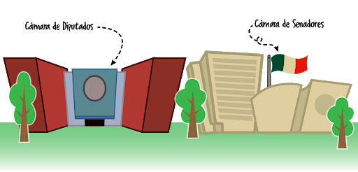

Glosario
Congreso de la union
Órgano depositario del Poder Legislativo federal de México. Este se conforma por una asamblea bicameral, dividida entre el Senado –constituido por 128 integrantes– y la Cámara de Diputados –que consta de 500 legisladores.
